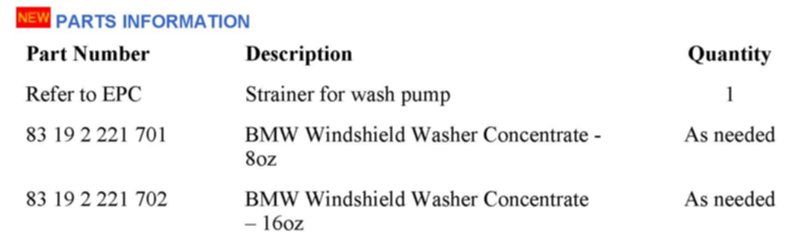
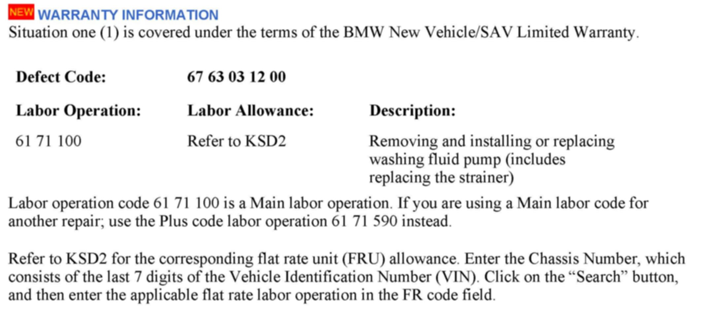

Wipers/Washers - Windshield Washer Malfunctions
SI B61 01 09General Electrical Systems
June 2012
Technical Service
This Service Information bulletin supersedes SI B61 01 09 dated March 2009.
SUBJECT
[NEW] Windshield Washer Malfunctions
MODEL
All
[NEW] INFORMATION
The washer fluid mixture ratio is regulated by the U.S. EPA and many individual states; do not exceed the allowable washer fluid "dilution/ratio limits" that apply. Follow the usage instructions on the washer fluid container. Only use BMWs Windshield Washer Concentrate or the equivalent.
[NEW] SITUATION
The windshield washer jets spray a very low volume of fluid or no fluid at all.
[NEW] CAUSE
Situation 1
A buildup of excess manufacturing-related materials on the windshield washer pump strainer. This primarily occurs on lower mileage vehicles.
Situation 2
A buildup of an organic "algae-like" substance on the windshield washer pump strainer. The algae-like substance is typically caused by using only water in the washer fluid tank.
^ The customer must be instructed to only fill the windshield washer fluid tank with the appropriate "mixture" of Windshield Washer Concentrate and water."
Situation 3
The windshield washer pump strainer is damaged because of using the "incorrect type" of cleaning fluid or one which contains an excessive and incorrect amount of washer fluid concentrate.
Note:
Attempting to use the windshield washers when the washer fluid reservoir is empty or when the strainer is clogged will damage the washer pump.
[NEW] PROCEDURE
1. Remove the washer fluid pump per ISTA Repair Instructions 61 71 100 and inspect the strainer.
2. Any remaining fluid in the washer fluid reservoir must be drained and properly discarded. Clean the reservoir tank as necessary.
3. Replace the strainer, which is installed on the intake side of the pump, as required.
4. Do not replace the washer pump, reservoir tank or windshield nozzles, provided they are still functioning properly.
5. Refill the washer fluid reservoir with the allowable ratio of approved BMW Windshield Washer Concentrate and water.

[NEW] PARTS INFORMATION

[NEW] WARRANTY INFORMATION